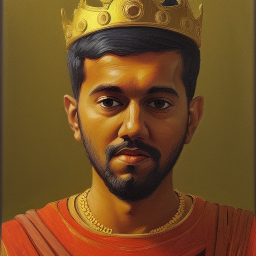

The Wondering Wanderer
Journeying Through Life’s Mysteries
“Life is a journey, and if you fall in love with the journey, you will be in love forever.” - Peter Hagerty

Welcome to Utopia, a world unlike any other. In Utopia, kindness and caring are the norm, and people go out of their way to help each other. This world is the opposite of Earth, where selfishness and greed often drive people’s actions. In Utopia, people strive for growth and progress, but not at the expense of others. They recognize that working together and supporting each other is the best way to achieve their goals. The people of Utopia are committed to justice and fairness. They have created a society that is built on the principles of equality, freedom, and respect for all individuals. Discrimination and prejudice are unknown here, and everyone is accepted for who they are. In Utopia, there is a strong emphasis on education and personal development. People are encouraged to pursue their passions and interests, and to contribute their unique talents to the betterment of society. Creativity and innovation are valued, and people are always seeking new ways to improve their world. Despite the many challenges that Utopia faces, the people are determined to overcome them. They work together to find solutions to problems, and support each other through difficult times. In Utopia, the well-being of the community is just as important as the well-being of the individual. Utopia is a world where people live in harmony with each other and with the natural world. It is a place where the pursuit of happiness is not just a goal, but a way of life.
I hereby introduce myself as the creator of the world Utopia, a world that embodies the ideals of peace, equality, and prosperity. It is with great pride that I have crafted this world and I remain committed to its continued growth and development. Furthermore, I’m a PhD scholar currently working on extreme classification, exploring the frontiers of machine learning in pursuit of cutting-edge insights and real-world applications. In my spare time, I indulge in a variety of hobbies, including painting, tennis, and playing tabla, an Indian percussion instrument that holds a special place in my heart. Through this website, I hope to share my passions and insights with you, and invite you to join me on a journey of discovery, exploration, and creativity. Whether you’re interested in the latest trends in machine learning, the beauty of the arts, or the joys of physical activity and music, there’s something for everyone here. So, come on in, make yourself comfortable, and let’s embark on an adventure together!